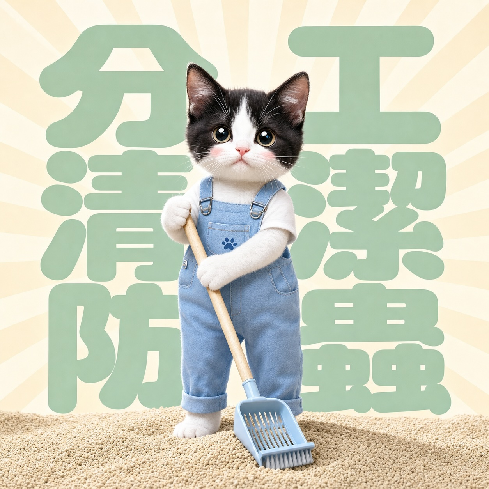

🧭
你家首個優先行動
即時知道應先處理貓砂、餵食、生熟食、外出習慣，還是家居清潔分區。
完成 6 條生活問題，即時知道你屋企最應優先處理的風險、誰負責貓砂、廚房應如何分區，以及下一步可以點樣令屋企更乾淨、更易相處。
畀伴侶／家人睇的一句話：
備孕安全係全家共同管理接觸風險，唔係將責任推畀隻貓。
一般撫摸貓不是典型感染途徑；較重要的是食物、生熟食處理、泥土／貓糞接觸與手部衛生。若已懷孕、正備孕、免疫力受影響或有個人擔心，請向婦產科／家庭醫生及獸醫取得個人化意見。

理想結果：貓仍是家人，屋企也有清楚規劃
將貓砂、飲食、食物處理與家居分區變成一家人都做得到的日常習慣。
唔係一堆嚇人資料，而係一份讓你、伴侶與家人今日就開始做到的家庭行動方案。
即時知道應先處理貓砂、餵食、生熟食、外出習慣，還是家居清潔分區。
明確安排誰負責每日清砂、誰處理廚房清潔，減少把所有壓力放在一個人身上。
食物處理區、貓碗區、貓砂區及地板區應如何分開，令家人更容易安心。
一鍵複製給男友、老公、父母或奶奶，將爭拗變成一起完成的家居計劃。
免費｜不用留電話｜完成後即時顯示結果
30-SECOND MYTH CHECK
把真正要處理的接觸風險講清楚，先可以讓伴侶與家人一起分工，而不是把壓力放在貓身上。
養貓本身不等於感染；重點是管理食物、泥土及貓糞等可能造成經口暴露的情境。
一般接觸或撫摸貓不是典型風險行為；核心是處理貓砂、泥土或生食後的手部衛生。
公開健康建議著重每日清砂、手部衛生、避免餵生肉、減少貓外出捕獵及家庭分工，而不是一概要求棄養。
3-MINUTE HOME AUDIT
只需 3 分鐘、6 條生活問題；完成後立即看到你家的優先行動、家人分工方向及相關家居管理建議。
YOUR HOME ACTION PLAN
MATCHED HOME MODULES
SEND THIS TO YOUR FAMILY
我們幫你把真正要管理的風險，變成全家都做得到的日常習慣。
EASY HOUSEHOLD DIVISION
養貓不是污糟，是有規劃的家庭管理：食物處理、貓碗、貓砂與地板各有固定工具和流程。
生熟食分開；處理食物後清洗砧板、刀具、工作枱與雙手。
使用易清洗食具與食物墊；完成清潔並待表面乾透後才讓貓使用。
每日清砂、妥善棄置、清理後洗手；可由家人建立固定分工。
按清潔產品標示使用，避免寵物接觸仍濕的地面或用品。
FAQ